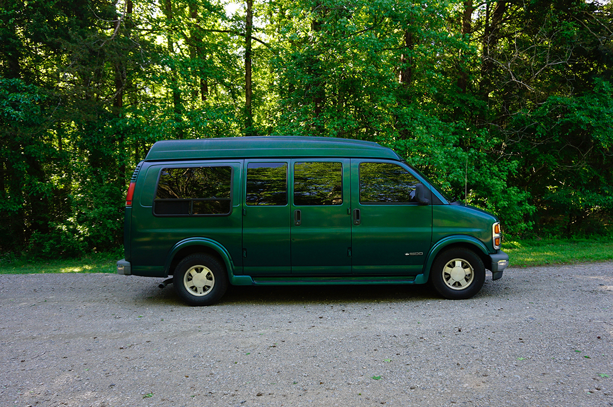

Overall topic: An Abridged Guide to Vanlife
What is the purpose of the site? To provide insight on how to start living in our traveling out of a van, and why more people are turning to this lifestyle.
What do you want the web site to accomplish? I want to provide guides on what to look for when buying a van, how to gut it, build ideas, product recommendations, etc.
What opportunity, problem, or issue is your site addressing? With older vans, it's difficult to find a build that mirrors the van you have. With this site, I can provide ideas and inspiration for others that have a 97" Chevy Express, or similar model.
Who is your intended audience? Be specific. Anyone looking to get on the road and travel, but specifically those looking into vanlife and how to make that happen. Millenials are likely the key demographic - due to rising house costs and stagnant wages, they're unable to afford houses and are looking at alternatives to renting.
What type of content might be included in your site? Be specific. Buying Guide, Build Ideas (gutting, insulation, decorating, etc), Trip Ideas, What's the Appeal (cost of living comparisons). There will be in-depth images documenting the build process and for DIY pages.
List at least two related or similar sites found on the Web. Gone with the Wynns and Gnomad Home.
